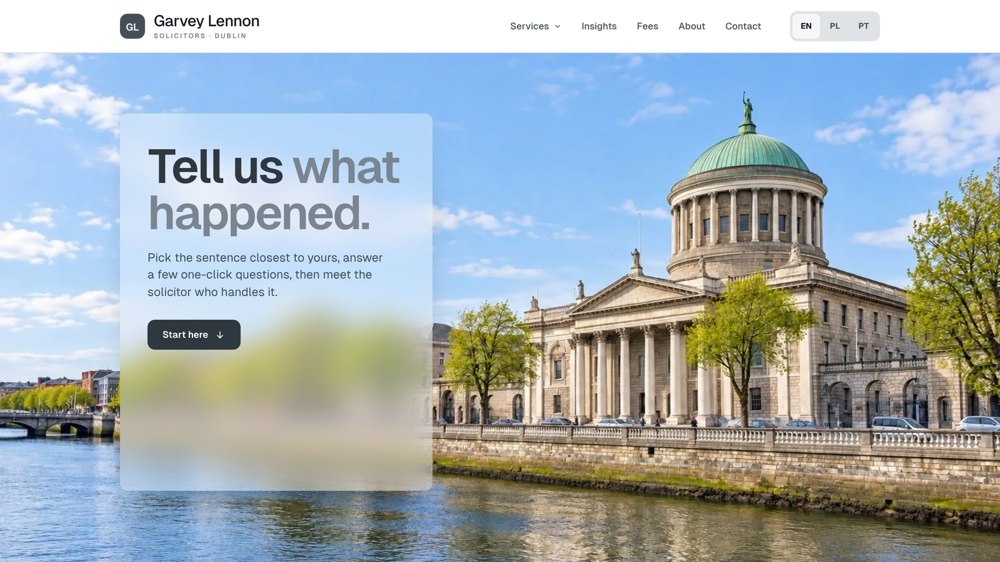

KenilworthVets
A neighbourhood vet that feels like the practice itself: small, warm and quick to reach when something is wrong.
- Sector
- Veterinary clinic, Dublin 6
- Role
- Design and build
- Built with
- Figma, HTML, CSS, JavaScript
The first visit
Owners don’t come to a vet’s site looking for a service name. They come because the dog is limping or the cat stopped eating. So I opened the site with “What brings you in?”: the owner picks the worry, and it leads to the right appointment the first time.
Changing vet is the hardest moment to win a client. I made registering a short panel that opens from any page, including the old vet’s name so records can be requested, so a new owner signs up in two minutes without hunting for a form.
In an emergency an owner can’t read a menu. I kept one tab on the edge of every page; opened, the rest of the site steps back and only the number and what to do while you wait remain.
Owners who come back
A practice lives on owners coming back for boosters and check-ups. I gave each pet a record with its vaccine timeline, weight and reminders, so owners see the next visit coming and book it on time.
A local vet is chosen on trust, and star ratings don’t build it. I replaced them with a noticeboard of birthdays, recoveries and goodbyes, so a new owner sees a practice that remembers its animals.
Owners ask their vet about walkers, groomers and boarding anyway. I grouped trusted local people by moments in an owner’s life, so the practice becomes the first place they ask, even when nothing is wrong.
Type and colour
On the phone


Every screen on this page is a recording of the live site.
Visit the live site